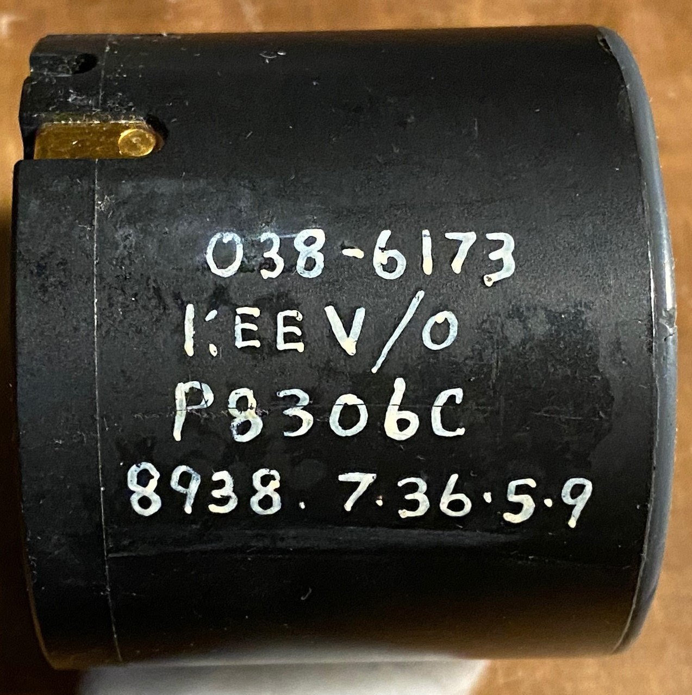
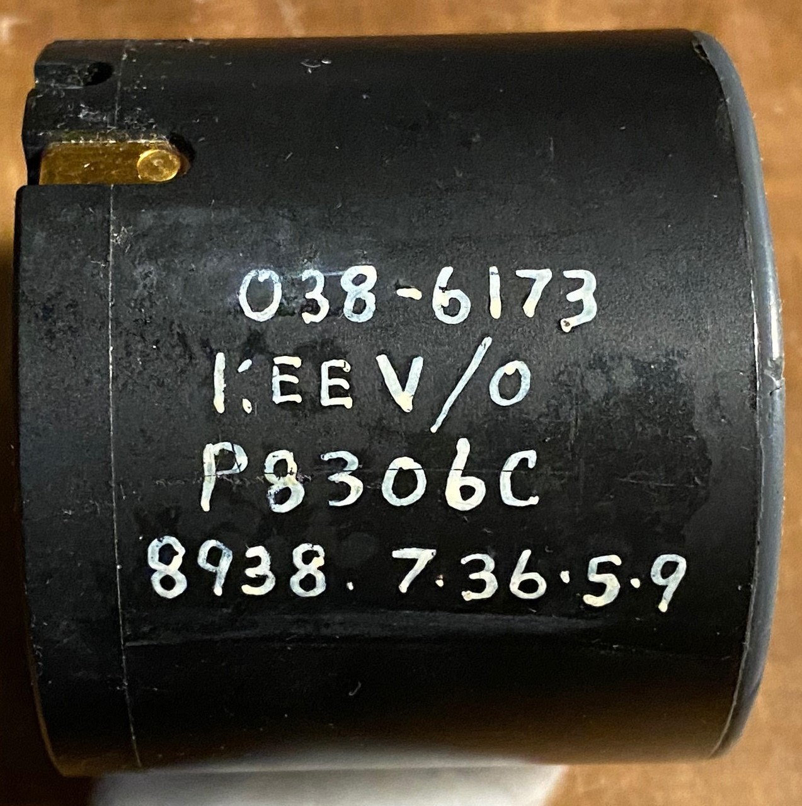
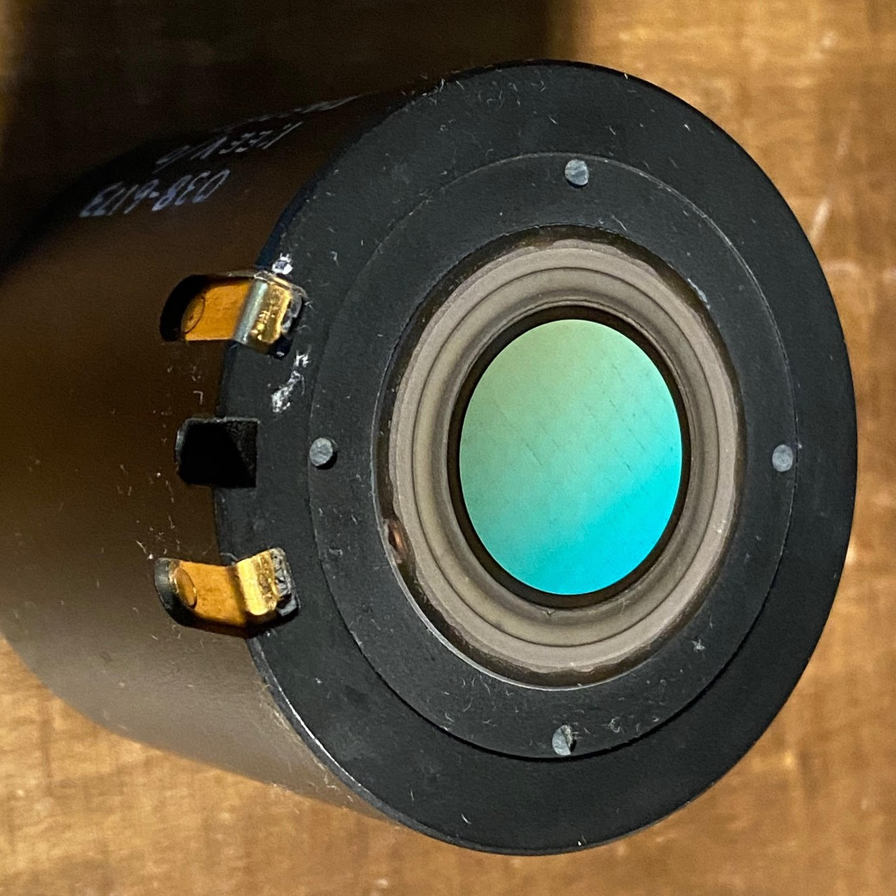

P8306C Image Intensifier
 

The p8306c is a gen 2 inverting tube made by EEV. It has an outer diameter of 53mm (!!!) and is powered from a 3v source.
These are used in the Pilkington Kite, not sure if anything else uses them. Fibre input window:

Don't see these very often, they are an obscure format and there are no monocular housings for them, apart from mine, which you can find here. :)